Process control elements can be dragged from the object catalog into a process container only. The main ORCA configuration dialog will not accept them. Each element gets, sets, or processes information from hardware or from other elements that it is connected to. Some elements are endpoint elements--so called because there must be one of them at the end of a chain of elements. Without an endpoint element, an element chain will not be evaluated. Endpoint elements that are in the middle of a chain are no longer considered endpoints, but are instead become pass-thru elements that do their normal function and then pass their evaluated state (usually the same as their input) to the next element in the chain. Also note that connections on the left side are always considered input connections and those on the right are output connections. For a simple example, look here.
Elements currently defined in the catalog:
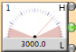 Adc. This element represents a physical hardware adc value (i.e. from an IP320 channel). There are three outputs. The 'H' output will be '1' if the adc value is greater than the high alarm value set in the dialog. The 'L' output will be '1' if the adc value is lower than the low alarm value. The center output is '1' is the adc value is between the two alarm levels.
Alarm. Posts an alarm if its input evaluates to '1'. Consided an endpoint element unless its output pad is connected to something. In that case it becomes a pass-thru element. The alarm help can be defined in its dialog box.
 Control Relay Receiver. Receives and passes the value of one of 256 control relay bits.
Control Relay Receiver. Receives and passes the value of one of 256 control relay bits.
Control Relay Setter. Sets the value of one of 256 control relay bits. There must be only one control relay setter element per control bit. There can be many control relay receiver elements for each bit. This element is considered an endpoint element.
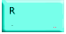 Counter. Just displays the number of times it sees the leading edge of a '1' state at its input. The leading edge of a '1' at the 'R' input will reset the count to zero.
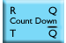 Count Down. This element decrements a count each time it sees the leading edge of a '1' state at its input. When the count reaches zero it will emit a '1' at its 'Q' output. The leading edge of a '1' state at the 'R' input will reset the count. The 'Q bar' output is the inverse of the 'Q' output.
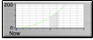 History. This element will display the state history of up to four inputs. You can set the plot update interval in the dialog. Regardless of the update interval all state changes will be recorded for viewing. A maxium of 10000 points are kept in the history. The plot x-axis is seconds into the past.
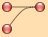Joiner. A pass-thru element that does an 'or' of its evaluated input values.
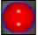 Manual Push Button. Acts as a SPST switch whose state is changed by clicking with the mouse. It is not associated with any physical hardware.
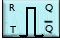 One Shot. The leading edge of a '1' at the 'T' input will trigger the emission a '1' pulse of a duration that is set in its dialog. The pulse will be interrupted by the leading edge of a '1' at the 'R' input. The 'Q bar' output is the inverse of the 'Q' output.
Output Relay. This element represents a physical hardware output bit (i.e. a IP408 bit). The physical bit will be set to this element's evaluated state. It is an endpoint element unless the output pad is connected in which case it becomes a pass-thru.
Pulser. This element's state flips between '1' and '0' with a period that is defined in its dialog. Becomes a pass-thru switch if anything is connected to its input pad.
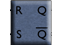RS Flip-Flop. This element is an implemenation of a flip-flop. The leading edge of a '1' at the 'S' input will set the 'Q' output to '1' and the 'Q bar' output to '0'. The leading edge of a '1' at the 'R' input will reset 'Q' and 'Q bar' to '0' and '1' respectfully.
Run Veto. If the input evaluates to '1' then a run veto will posted and it will not be possible to start a run. If a run is in progress, it will be stopped. There may be many run vetos defined and the reasons for each can be entered in their dialogs. This is an endpoint element.
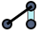 SPDT switch. This element represents a physical hardware input bit (i.e. a IP408 bit). The switch will be closed if the bit state is '1' and open if the state is '0'. This element acts as a pass-thru for the state of elements connected to the input connection pad. If the input pad is not connected then the switch acts as if connected to an element passing a '1' state.
SPST switch. This element represents a physical hardware input bit (i.e. a IP408 bit). The switch will be closed if the bit state is '1' and open if the state is '0'. This element acts as a pass-thru for the state of elements connected to the input connection pad. If the input pad is not connected then the switch acts as if connected to an element passing a '1' state.
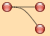Splitter. A pass-thru element that sends its evaluated input value to two connected elements.
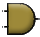 AND Gate. Does a logical 'AND' of its two inputs.
NAND Gate. Does a logical 'not AND' of its two inputs.
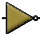 Inverter. Just inverts its evaluated input value.
OR Gate. Does a logical 'OR' of its two inputs.
NOR Gate. Does a logical 'not OR' of its two inputs.
XNOR Gate. Does a logical 'exclusive not OR' of its two inputs.
XOR Gate. Does a logical 'exclusive OR' of its two inputs.